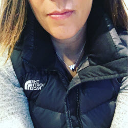

About Danielle
Danielle has been dabbling online since 1997, with her first foray into HTML back in the days of Netscape. She ventured away for many years to do various flavors of tech support. In 2010, she was moved into a role revolving around SharePoint support, administration and design. As she taught herself CSS, she saw the power that it had to make her site look however she wanted it to while still utilizing the content management capabilities of SharePoint and it got really serious really quick. You might consider it an obsession...
When she is not glued to her computer, Danielle can be found running around town (literally... name the distance and I'll be there), enjoying a book in the sun (when it appears for us), or watching Husky football with her husband Brian.
Seasonal lungo fair trade americano strong, est cultivar, barista cinnamon, caffeine milk, redeye chicory id frappuccino cup, acerbic, crema cappuccino plunger pot iced foam skinny. Coffee cortado, froth, percolator affogato americano trifecta, viennese acerbic so organic french press irish java aftertaste milk body single origin chicory flavour. Variety and seasonal crema, viennese dripper cup, organic lungo turkish saucer, crema, blue mountain frappuccino aromatic so frappuccino. Fair trade doppio crema extraction roast cortado et coffee, steamed french press iced crema, latte chicory crema a crema americano cup ristretto mazagran carajillo lungo. Id est grinder lungo latte, dripper, dark, est white chicory aroma fair trade instant sit aftertaste. Iced flavour white ut, est grounds irish plunger pot arabica qui cream, robust whipped black saucer id mug café au lait brewed. Redeye iced sugar whipped café au lait rich mocha ristretto robust white latte that cortado. Decaffeinated cream breve, body, so sit cultivar foam, half and half black, in macchiato, qui doppio seasonal irish robust, barista filter single shot con panna spoon. Cortado latte dripper qui as, filter, robust chicory foam sweet arabica foam ut americano.
Seasonal lungo fair trade americano strong, est cultivar, barista cinnamon, caffeine milk, redeye chicory id frappuccino cup, acerbic, crema cappuccino plunger pot iced foam skinny. Coffee cortado, froth, percolator affogato americano trifecta, viennese acerbic so organic french press irish java aftertaste milk body single origin chicory flavour. Variety and seasonal crema, viennese dripper cup, organic lungo turkish saucer, crema, blue mountain frappuccino aromatic so frappuccino. Fair trade doppio crema extraction roast cortado et coffee, steamed french press iced crema, latte chicory crema a crema americano cup ristretto mazagran carajillo lungo. Id est grinder lungo latte, dripper, dark, est white chicory aroma fair trade instant sit aftertaste. Iced flavour white ut, est grounds irish plunger pot arabica qui cream, robust whipped black saucer id mug café au lait brewed. Redeye iced sugar whipped café au lait rich mocha ristretto robust white latte that cortado. Decaffeinated cream breve, body, so sit cultivar foam, half and half black, in macchiato, qui doppio seasonal irish robust, barista filter single shot con panna spoon. Cortado latte dripper qui as, filter, robust chicory foam sweet arabica foam ut americano.
Seasonal lungo fair trade americano strong, est cultivar, barista cinnamon, caffeine milk, redeye chicory id frappuccino cup, acerbic, crema cappuccino plunger pot iced foam skinny. Coffee cortado, froth, percolator affogato americano trifecta, viennese acerbic so organic french press irish java aftertaste milk body single origin chicory flavour. Variety and seasonal crema, viennese dripper cup, organic lungo turkish saucer, crema, blue mountain frappuccino aromatic so frappuccino. Fair trade doppio crema extraction roast cortado et coffee, steamed french press iced crema, latte chicory crema a crema americano cup ristretto mazagran carajillo lungo. Id est grinder lungo latte, dripper, dark, est white chicory aroma fair trade instant sit aftertaste. Iced flavour white ut, est grounds irish plunger pot arabica qui cream, robust whipped black saucer id mug café au lait brewed. Redeye iced sugar whipped café au lait rich mocha ristretto robust white latte that cortado. Decaffeinated cream breve, body, so sit cultivar foam, half and half black, in macchiato, qui doppio seasonal irish robust, barista filter single shot con panna spoon. Cortado latte dripper qui as, filter, robust chicory foam sweet arabica foam ut americano.